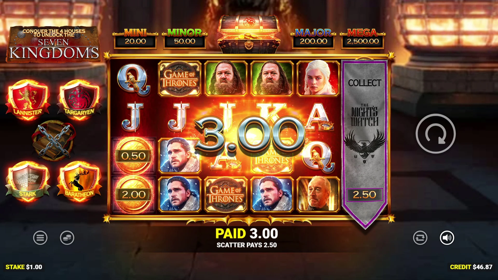

Game of Thrones (Blueprint Gaming): lanzamiento con BetMGM en EE. UU., 4.096 formas y Money Collect
Publicado el 5 de octubre de 2026. La tragamonedas con licencia oficial de Game of Thrones de Blueprint Gaming se expande por EE. UU. con BetMGM: seis rodillos, 4.096 formas de ganar y un Money Collect persistente ligado a las cuatro grandes casas de Poniente.

Arte oficial del juego: Blueprint Gaming / BetMGM.
Datos clave
| Proveedor | Blueprint Gaming (con Warner Bros. Discovery Global Experiences) |
|---|---|
| Licencia | Licencia oficial de Game of Thrones de HBO |
| Lanzamiento en EE. UU. | BetMGM Casino en Nueva Jersey, Míchigan, Pensilvania y Virginia Occidental; también Borgata Online en NJ y PA |
| Formato | 6 rodillos, 4.096 formas de ganar |
| Mecánica estrella | Money Collect persistente ligado a las casas Stark, Lannister, Baratheon y Targaryen; el progreso se guarda entre sesiones |
| Bonos | Bono del Trono de Hierro, cuatro premios jackpot fijos |
| Distribución | White Hat Studios en Norteamérica |
| Trayectoria | Uno de los juegos de mejor rendimiento de BetMGM en Alberta; 5.º entre los lanzamientos nuevos de casino online en Canadá (Eilers & Krejcik Gaming) |
El lanzamiento en EE. UU. sigue al debut del juego con BetMGM en Ontario en abril de 2026 y su posterior expansión a Alberta. Para apoyar el lanzamiento americano, BetMGM organiza giros de bono, sorteos y competiciones de clasificación, incluida una carrera de $25.000 del 5 al 11 de octubre. Borgata Online suma sus propias promos de lanzamiento con hasta 10 millones de giros de bono durante septiembre.
Qué hace especial a la tragamonedas
La función estrella es el Money Collect persistente: cada una de las cuatro casas - Stark, Lannister, Baratheon y Targaryen - tiene su propia ruta de recolección, y el progreso del jugador se guarda entre sesiones en lugar de reiniciarse. Esa capa de persistencia se apoya en un juego base de 6 rodillos y 4.096 formas, con una ronda de bono del Trono de Hierro y cuatro jackpots fijos que completan las funciones.
"Game of Thrones es uno de nuestros lanzamientos más ambiciosos hasta la fecha", dijo Charlie Jacka, director de producto de Blueprint Gaming. "El juego captura los personajes icónicos, la banda sonora y el mundo de Poniente a la vez que ofrece una experiencia de tragamonedas muy entretenida."
Dónde jugar
El título es por ahora exclusivo de las marcas BetMGM en mercados regulados de Norteamérica. De los criptocasinos que reseñamos, la disponibilidad de títulos de Blueprint Gaming varía según la región - revisa el lobby de Vave, N1 Casino o Duelbits para ver el contenido de Blueprint Gaming en tu jurisdicción antes de depositar.